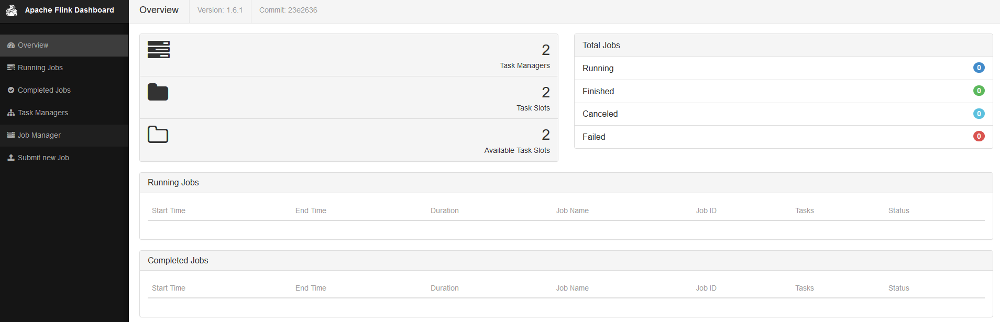
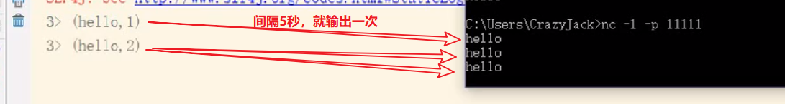
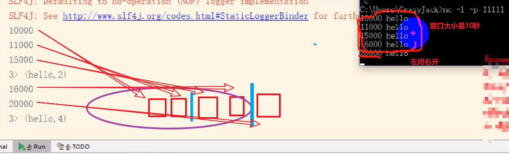

Flink
作者：尚硅谷章鹏
整理：小邹[yw_forgit@163.com]
版本：V1.0
第一章 概述
1.1 流处理技术的演变
在开源世界里，Apache Storm项目是流处理的先锋。Storm最早由Nathan Marz和创业公司BackType的一个团队开发，后来才被Apache基金会接纳。Storm提供了低延迟的流处理，但是它为实时性付出了一些代价：很难实现高吞吐，并且其正确性没能达到通常所需的水平，换句话说，它并不能保证exactly-once（精确一致性），即便是它能够保证的正确性级别，其开销也相当大。
在低延迟和高吞吐的流处理系统中维持良好的容错性是非常困难的，但是为了得到有保障的准确状态，人们想到了一种替代方法：将连续时间中的流数据分割成一系列微小的批量作业。如果分割得足够小（即所谓的微批处理作业），计算就几乎可以实现真正的流处理。因为存在延迟，所以不可能做到完全实时，但是每个简单的应用程序都可以实现仅有几秒甚至几亚秒的延迟。这就是在Spark批处理引擎上运行的Spark Streaming所使用的方法。
更重要的是，使用微批处理方法，可以实现exactly-once语义，从而保障状态的一致性。如果一个微批处理失败了，它可以重新运行，这比连续的流处理方法更容易。Storm Trident是对Storm的延伸，它的底层流处理引擎就是基于微批处理方法来进行计算的，从而实现了exactly-once语义，但是在延迟性方面付出了很大的代价。
对于Storm Trident以及Spark Streaming等微批处理策略，只能根据批量作业时间的倍数进行分割，无法根据实际情况分割事件数据，并且，对于一些对延迟比较敏感的作业，往往需要开发者在写业务代码时花费大量精力来提升性能。这些灵活性和表现力方面的缺陷，使得这些微批处理策略开发速度变慢，运维成本变高。
于是，Flink出现了，这一技术框架可以避免上述弊端，并且拥有所需的诸多功能，还能按照连续事件高效地处理数据，Flink的部分特性如下图所示：
图 Flink的部分特性
1.2 初识Flink
Flink起源于Stratosphere项目，Stratosphere是在2010~2014年由3所地处柏林的大学和欧洲的一些其他的大学共同进行的研究项目，2014年4月Stratosphere的代码被复制并捐赠给了Apache软件基金会，参加这个孵化项目的初始成员是Stratosphere系统的核心开发人员，2014年12月，Flink一跃成为Apache软件基金会的顶级项目。
在德语中，Flink一词表示快速和灵巧，项目采用一只松鼠的彩色图案作为logo，这不仅是因为松鼠具有快速和灵巧的特点，还因为柏林的松鼠有一种迷人的红棕色，而Flink的松鼠logo拥有可爱的尾巴，尾巴的颜色与Apache软件基金会的logo颜色相呼应，也就是说，这是一只Apache风格的松鼠。
图 Flink Logo
Flink主页在其顶部展示了该项目的理念：“Apache Flink是为分布式、高性能、随时可用以及准确的流处理应用程序打造的开源流处理框架”。
Apache Flink是一个框架和分布式处理引擎，用于对无界和有界数据流进行有状态计算。Flink被设计在所有常见的集群环境中运行，以内存执行速度和任意规模来执行计算。
1.3 批处理与流处理
批处理的特点是有界、持久、大量，批处理非常适合需要访问全套记录才能完成的计算工作，一般用于离线统计。流处理的特点是无界、实时，流处理方式无需针对整个数据集执行操作，而是对通过系统传输的每个数据项执行操作，一般用于实时统计。
在Spark生态体系中，对于批处理和流处理采用了不同的技术框架，批处理由SparkSQL实现，流处理由Spark Streaming实现，这也是大部分框架采用的策略，使用独立的处理器实现批处理和流处理，而Flink可以同时实现批处理和流处理。
Flink是如何同时实现批处理与流处理的呢？答案是，Flink将批处理（即处理有限的静态数据）视作一种特殊的流处理。
Flink的核心计算架构是下图中的Flink Runtime执行引擎，它是一个分布式系统，能够接受数据流程序并在一台或多台机器上以容错方式执行。
Flink Runtime执行引擎可以作为YARN（Yet Another Resource Negotiator）的应用程序在集群上运行，也可以在Mesos集群上运行，还可以在单机上运行（这对于调试Flink应用程序来说非常有用）。
图 Flink计算架构
上图为Flink技术栈的核心组成部分，值得一提的是，Flink分别提供了面向流式处理的接口（DataStream API）和面向批处理的接口（DataSet API）。因此，Flink既可以完成流处理，也可以完成批处理。Flink支持的拓展库涉及机器学习（FlinkML）、复杂事件处理（CEP）、以及图计算（Gelly），还有分别针对流处理和批处理的Table API。
能被Flink Runtime执行引擎接受的程序很强大，但是这样的程序有着冗长的代码，编写起来也很费力，基于这个原因，Flink提供了封装在Runtime执行引擎之上的API，以帮助用户方便地生成流式计算程序。Flink 提供了用于流处理的DataStream API和用于批处理的DataSet API。值得注意的是，尽管Flink Runtime执行引擎是基于流处理的，但是DataSet API先于DataStream API被开发出来，这是因为工业界对无限流处理的需求在Flink诞生之初并不大。
DataStream API可以流畅地分析无限数据流，并且可以用Java或者Scala来实现。开发人员需要基于一个叫DataStream的数据结构来开发，这个数据结构用于表示永不停止的分布式数据流。
Flink的分布式特点体现在它能够在成百上千台机器上运行，它将大型的计算任务分成许多小的部分，每个机器执行一部分。Flink能够自动地确保发生机器故障或者其他错误时计算能够持续进行，或者在修复bug或进行版本升级后有计划地再执行一次。这种能力使得开发人员不需要担心运行失败。Flink本质上使用容错性数据流，这使得开发人员可以分析持续生成且永远不结束的数据（即流处理）。
第二章 Flink基本架构
2.5 JobManager与TaskManager
Flink运行时包含了两种类型的处理器（这是两个JVM进程）：
JobManager处理器：也称之为Master（更新Driver），用于协调分布式执行，它们用来调度task，协调检查点，协调失败时恢复等。Flink运行时至少存在一个master处理器，如果配置高可用模式则会存在多个master处理器，它们其中有一个是leader，而其他的都是standby。
TaskManager处理器：也称之为Worker（其实更像是Execute，这是进程，Worker是一个节点），用于执行一个dataflow的task(或者特殊的subtask)、数据缓冲和data stream的交换，Flink运行时至少会存在一个worker处理器。
图 JobManager与TaskManager
Master和Worker处理器可以直接在物理机上启动，或者通过像YARN这样的资源调度框架。
Worker连接到Master，告知自身的可用性进而获得任务分配。
2.1 无界数据流与有界数据流
Flink用于处理有界和无界数据：
无界数据流：无界数据流有一个开始但是没有结束，它们不会在生成时终止并提供数据，必须连续处理无界流，也就是说必须在获取后立即处理event。对于无界数据流我们无法等待所有数据都到达，因为输入是无界的，并且在任何时间点都不会完成。处理无界数据通常要求以特定顺序（例如事件发生的顺序）获取event，以便能够推断结果完整性。（无界的数据无法聚合，想聚合要变成有界的）
有界数据流：有界数据流有明确定义的开始和结束，可以在执行任何计算之前通过获取所有数据来处理有界流，处理有界流不需要有序获取，因为可以始终对有界数据集进行排序，有界流的处理也称为批处理。
图 无界数据流与有解数据流
Apache Flink是一个面向分布式数据流处理和批量数据处理的开源计算平台，它能够基于同一个Flink运行时(Flink Runtime)，提供支持流处理和批处理两种类型应用的功能。现有的开源计算方案，会把流处理和批处理作为两种不同的应用类型，因为它们要实现的目标是完全不相同的：流处理一般需要支持低延迟、Exactly-once保证，而批处理需要支持高吞吐、高效处理，所以在实现的时候通常是分别给出两套实现方法，或者通过一个独立的开源框架来实现其中每一种处理方案。例如，实现批处理的开源方案有MapReduce、Tez、Crunch、Spark，实现流处理的开源方案有Samza、Storm。
Flink在实现流处理和批处理时，与传统的一些方案完全不同，它从另一个视角看待流处理和批处理，将二者统一起来：Flink是完全支持流处理，也就是说作为流处理看待时输入数据流是无界的；批处理被作为一种特殊的流处理，只是它的输入数据流被定义为有界的。基于同一个Flink运行时(Flink Runtime)，分别提供了流处理和批处理API，而这两种API也是实现上层面向流处理、批处理类型应用框架的基础。
2.2 数据流编程模型
Flink提供了不同级别的抽象，以开发流或批处理作业，如下图所示：
图 Flink抽象级别
最底层级的抽象仅仅提供了有状态流，它将通过过程函数（Process Function）被嵌入到DataStream API中。底层过程函数（Process Function） 与 DataStream API 相集成，使其可以对某些特定的操作进行底层的抽象，它允许用户可以自由地处理来自一个或多个数据流的事件，并使用一致的容错的状态。除此之外，用户可以注册事件时间并处理时间回调，从而使程序可以处理复杂的计算。
实际上，大多数应用并不需要上述的底层抽象，而是针对核心API（Core APIs） 进行编程，比如DataStream API（有界或无界流数据）以及DataSet API（有界数据集）。这些API为数据处理提供了通用的构建模块，比如由用户定义的多种形式的转换（transformations），连接（joins），聚合（aggregations），窗口操作（windows）等等。DataSet API 为有界数据集提供了额外的支持，例如循环与迭代。这些API处理的数据类型以类（classes）的形式由各自的编程语言所表示。
Table API 是以表为中心的声明式编程，其中表可能会动态变化（在表达流数据时）。Table API遵循（扩展的）关系模型：表有二维数据结构（schema）（类似于关系数据库中的表），同时API提供可比较的操作，例如select、project、join、group-by、aggregate等。Table API程序声明式地定义了什么逻辑操作应该执行，而不是准确地确定这些操作代码的看上去如何 。 尽管Table API可以通过多种类型的用户自定义函数（UDF）进行扩展，其仍不如核心API更具表达能力，但是使用起来却更加简洁（代码量更少）。除此之外，Table API程序在执行之前会经过内置优化器进行优化。
你可以在表与 DataStream/DataSet 之间无缝切换，以允许程序将 Table API 与 DataStream 以及 DataSet 混合使用。
Flink提供的最高层级的抽象是 SQL 。这一层抽象在语法与表达能力上与 Table API 类似，但是是以SQL查询表达式的形式表现程序。SQL抽象与Table API交互密切，同时SQL查询可以直接在Table API定义的表上执行。
第三章 Flink集群搭建
Flink可以选择的部署方式有：
Local、Standalone（资源利用率低）、Yarn、Mesos、Docker、Kubernetes、AWS。
我们主要对Standalone模式和Yarn模式下的Flink集群部署进行分析。
3.1Standalone模式安装
我们对standalone模式的Flink集群进行安装，准备三台虚拟机，其中一台作为JobManager（hadoop-senior01），另外两台作为TaskManager（hadoop-senior02、hadoop-senior03）。
1. 在官网下载1.6.1版本Flink（https://archive.apache.org/dist/flink/flink-1.6.1/）。
2. 将安装包上传到JobManager的节点（hadoop-senior01）。
3. 进入Linux系统对安装包进行解压：
4. 修改安装目录下conf文件夹内的flink-conf.yaml配置文件，指定JobManager：
这是作为Master的主机名
5. 修改安装目录下conf文件夹内的slave配置文件，指定TaskManager：
6. 将配置好的Flink目录分发给其他的两台节点：
7. 在hadoop-senior01节点启动集群：
8. 通过jps查看进程信息：
9. 访问集群web界面（8081端口）：

可以这样子提交任务
这是Flink自带的一个jar，上传
三步骤，通过Source把数据拿过来，中间一步是一系列的算子，对流式数据进行处理，最好通过Sink写出到指定的输出源。

任务完成
在Standalone模式下运行，JobManager、TaskManager都在一个节点上运行，分别对应着spark的Master、Work。
3.2Yarn模式安装
1 在官网下载1.6.1版本Flink（https://archive.apache.org/dist/flink/flink-1.6.1/）。
2 将安装包上传到要按照JobManager的节点（hadoop-senior01）。
3 进入Linux系统对安装包进行解压：
4 修改安装目录下conf文件夹内的flink-conf.yaml配置文件，指定JobManager：
5 修改安装目录下conf文件夹内的slave配置文件，指定TaskManager：
6 将配置好的Flink目录分发给其他的两台节点：
7. 明确虚拟机中已经设置好了环境变量HADOOP_HOME。（前面都一样，就这里开始不一样）
8. 启动Hadoop集群（HDFS和Yarn）。
9. 在hadoop-senior01节点提交Yarn-Session，使用安装目录下bin目录中的yarn-session.sh脚本进行提交：
/opt/modules/flink-1.6.1/bin/yarn-session.sh -n 2 -s 6 -jm
1024 -tm 1024 -nm test -d
其中：
-n(--container)：TaskManager的数量。
-s(--slots)： 每个TaskManager的slot数量，默认一个slot一个core，默认每个taskmanager的slot的个数为1，有时可以多一些taskmanager，做冗余。（一个TaskManager有几个slot，这些slot就分均分TaskManager的内存，只分内存不分CPU，每个slot可以运行一个Task）
-jm：JobManager的内存（单位MB)。
-tm：每个taskmanager的内存（单位MB)。
-nm：yarn 的appName(现在yarn的ui上的名字)。
-d：后台执行。
10. 启动后查看Yarn的Web页面，可以看到刚才提交的会话：（这任务一直都在，除非退出）
11. 在提交Session的节点查看进程：

12. 提交Jar到集群运行：（-m是指定Master，这是yarn集群；后面是官方提供的jar）
/opt/modules/flink-1.6.1/bin/flink run -m yarn-cluster
examples/batch/WordCount.jar
13. 提交后在Yarn的Web页面查看任务运行情况：
14. 任务运行结束后在控制台打印如下输出：
第四章 Flink运行架构
4.1 任务提交流程
图 Yarn模式任务提交流程
Flink任务提交后，Client向HDFS上传Flink的Jar包和配置，之后向Yarn ResourceManager提交任务，ResourceManager分配Container资源并通知对应的NodeManager启动ApplicationMaster，ApplicationMaster启动后加载Flink的Jar包和配置构建环境，然后启动JobManager，之后ApplicationMaster向ResourceManager申请资源启动TaskManager，ResourceManager分配Container资源后，由ApplicationMaster通知资源所在节点的NodeManager启动TaskManager，NodeManager加载Flink的Jar包和配置构建环境并启动TaskManager，TaskManager启动后向JobManager发送心跳包，并等待JobManager向其分配任务。
4.2 任务调度原理
图 任务调度原理
客户端不是运行时和程序执行的一部分，但它用于准备并发送（通过Actor发送）dataflow（把代码抽象成数据流图(Dataflow)）给Master（根据Dataflow里面的相邻的两个算子之间有没有并行度的变化或者说有没有分区数的变化来划分Task，之后把Task分发给TaskManager，通过Actor分发），然后，客户端断开连接或者维持连接以等待接收计算结果，客户端可以以两种方式运行：要么作为Java/Scala程序的一部分被程序触发执行，要么以命令行./bin/flink run的方式执行。
Slot的个数是TaskManager最大同时运行Task的个数，如果并行度是1，则同一时间只有一个Slot执行Task。
4.3 Worker与Slots
每一个worker(TaskManager)是一个JVM进程（yarn模式），它可能会在独立的线程上执行一个或多个subtask。为了控制一个worker能接收多少个task，worker通过task slot来进行控制（一个worker至少有一个task slot）。（Flink是根据还有多少个Slot来分配任务的，而spark是根据还有多少内存来分配任务的）
每个task slot表示TaskManager拥有资源的一个固定大小的子集。假如一个TaskManager有三个slot，那么它会将其管理的内存分成三份给各个slot（如果一个TaskManager只有一个slot，则该slot的task会独享一个JVM的空间）。资源slot化意味着一个subtask将不需要跟来自其他job的subtask竞争被管理的内存，取而代之的是它将拥有一定数量的内存储备。需要注意的是，这里不会涉及到CPU的隔离，slot目前仅仅用来隔离task的受管理的内存。
通过调整task slot的数量，允许用户定义subtask之间如何互相隔离。如果一个TaskManager一个slot，那将意味着每个task group运行在独立的JVM中（该JVM可能是通过一个特定的容器启动的），而一个TaskManager多个slot意味着更多的subtask可以共享同一个JVM。而在同一个JVM进程中的task将共享TCP连接（基于多路复用）和心跳消息。它们也可能共享数据集和数据结构，因此这减少了每个task的负载。
图 TaskManager与Slot
Task Slot是静态的概念，是指TaskManager具有的并发执行能力，可以通过参数taskmanager.numberOfTaskSlots进行配置，而并行度parallelism是动态概念，即TaskManager运行程序时实际使用的并发能力，可以通过参数parallelism.default进行配置。
也就是说，假设一共有3个TaskManager，每一个TaskManager中的分配3个TaskSlot，也就是每个TaskManager可以接收3个task，一共9个TaskSlot，如果我们设置parallelism.default=1，即运行程序默认的并行度为1，9个TaskSlot只用了1个，有8个空闲，因此，设置合适的并行度才能提高效率。
在spark中，划分stage之后，一个不会触发shuffle的stage内的所有算子都是由一个Task完成的，而不是一个算子一个Task，因为算子之间可能有数据交互。而Flink也是做了这种优化，就是算子与算子之间并行度（分区）发生了变化就会划分为两个task。
4.4 程序与数据流
Flink程序的基础构建模块是 流（streams，就是算子与算子之间的数据流） 与 转换（transformations，就是算子）（需要注意的是，Flink的DataSet API所使用的DataSets其内部也是stream）。一个stream可以看成一个中间结果，而一个transformations是以一个或多个stream作为输入的某种operation，该operation利用这些stream进行计算从而产生一个或多个result stream。
在运行时，Flink上运行的程序会被映射成streaming dataflows，它包含了streams和transformations operators。每一个dataflow以一个或多个sources开始以一个或多个sinks结束。dataflow类似于任意的有向无环图（DAG），当然特定形式的环可以通过iteration构建。在大部分情况下，程序中的transformations跟dataflow中的operator是一一对应的关系，但有时候，一个transformation可能对应多个operator。
Source读取数据，Transformation是中间的算子，Sink是输出。
图 程序与数据流
4.5 并行数据流
task会在slots中并行执行。
Flink程序的执行具有并行、分布式的特性。在执行过程中，一个 stream 包含一个或多个 stream partition（流分区取决于并行度的设置） ，而每一个 operator（就是一个算子，一个算子有多少个subtask取决于stream partition） 包含一个或多个 operator subtask，这些operator subtasks（在slot执行）在不同的线程、不同的物理机或不同的容器中彼此互不依赖得执行。
一个特定operator的subtask的个数被称之为其parallelism(并行度)。一个stream的并行度总是等同于其producing operator的并行度。一个程序中，不同的operator可能具有不同的并行度。
由于Source的并行度被设置为2，就会有两个分区，然后有两个subtask去读取数据。
图 并行数据流
Stream在operator之间传输数据的形式可以是one-to-one(forwarding)的模式也可以是redistributing的模式，具体是哪一种形式，取决于operator的种类。
One-to-one：stream(比如在source和map operator之间)维护着分区以及元素的顺序。那意味着map operator的subtask看到的元素的个数以及顺序跟source operator的subtask生产的元素的个数、顺序相同，map、fliter、flatMap等算子都是one-to-one的对应关系。（就是一个分区的内容，经过一个算子之后这些分区是一一对应的，就是数据所处的分区位置没有变化，比如）
Redistributing：stream(map()跟keyBy/window之间或者keyBy/window跟sink之间)的分区会发生改变。每一个operator subtask依据所选择的transformation发送数据到不同的目标subtask。例如，keyBy() 基于hashCode重分区、broadcast和rebalance会随机重新分区，这些算子都会引起redistribute过程，而redistribute过程就类似于Spark中的shuffle过程。（经过算子之后，原分区数据被打散到其他的分区，比如）
4.6 task与operator chains
出于分布式执行的目的，Flink将operator的subtask链接在一起形成task，每个task在一个线程中执行。将operators链接成task是非常有效的优化：它能减少线程之间的切换和基于缓存区的数据交换，在减少时延的同时提升吞吐量。链接的行为可以在编程API中进行指定。
下面这幅图，展示了5个subtask以5个并行的线程来执行：
对于One-to-one的算子，会组合成Operator chain，然后用一个Task来执行。
图 task与operator chains
第四章 Flink DataStream API
5.1 Flink运行模型
图 Flink查询模型
以上为Flink的运行模型，Flink的程序主要由三部分构成，分别为Source、Transformation、Sink。DataSource主要负责数据的读取，Transformation主要负责对属于的转换操作，Sink负责最终数据的输出。
5.2 Flink程序架构
每个Flink程序都包含以下的若干流程：
l 获得一个执行环境；（Execution Environment）相当于spark的sparkcontext
l 加载/创建初始数据；（Source）
l 指定转换这些数据；（Transformation）
l 指定放置计算结果的位置；（Sink）
l 触发程序执行。
5.3 Environment
项目依赖
要add一下，这样右键才能添加Scala类等
执行环境StreamExecutionEnvironment是所有Flink程序的基础。
创建执行环境有三种方式，分别为：
StreamExecutionEnvironment.getExecutionEnvironment （绝大多数是调用这个）
StreamExecutionEnvironment.createLocalEnvironment
StreamExecutionEnvironment.createRemoteEnvironment
5.3.1 StreamExecutionEnvironment.getExecutionEnvironment
创建一个执行环境，表示当前执行程序的上下文。 如果程序是独立调用的，则此方法返回本地执行环境（LocalEnvironment）；如果从命令行客户端调用程序以提交到集群，则此方法返回此集群的执行环境（RemoteEnvironment），也就是说，getExecutionEnvironment会根据查询运行的方式决定返回什么样的运行环境，是最常用的一种创建执行环境的方式。不需要指定参数，默认并行度是8。
val env = StreamExecutionEnvironment.getExecutionEnvironment
5.3.2 StreamExecutionEnvironment.createLocalEnvironment
返回本地执行环境，需要在调用时指定默认的并行度。
val env = StreamExecutionEnvironment.createLocalEnvironment(1)
5.3.3 StreamExecutionEnvironment.createRemoteEnvironment
返回集群执行环境，将Jar提交到远程服务器。需要在调用时指定JobManager的IP和端口号，并指定要在集群中运行的Jar包。
val env = StreamExecutionEnvironment.createRemoteEnvironment(1)
5.4 Source
数据

5.4.1 基于File的数据源
1. readTextFile(path)
一列一列的读取遵循TextInputFormat规范的文本文件，并将结果作为String返回。
val env = StreamExecutionEnvironment.getExecutionEnvironment //
创建运行环境
val stream = env.readTextFile("/opt/modules/test00.txt") //
获取数据源（Source）
stream.print() // 打印数据（Sink）
env.execute("FirstJob") //
执行任务。FirstJob起一个名字
这里举个例子
就是这个报错
打印结果，左边是处理这条数据的线程编号
2. readFile(fileInputFormat, path)
按照指定的文件格式读取文件。
val env = StreamExecutionEnvironment.getExecutionEnvironment
val path = new Path("/opt/modules/test00.txt")
val stream = env.readFile(new TextInputFormat(path),
"/opt/modules/test.txt")
stream.print()
env.execute("FirstJob")
5.4.2 基于Socket的数据源
1. socketTextStream
从Socket中读取信息，元素可以用分隔符分开。（调试的时候可以用这种）
val env =
StreamExecutionEnvironment.getExecutionEnvironment
val stream = env.socketTextStream("localhost",
11111)
stream.print()
env.execute("FirstJob")
这是netcat，起一个服务器，然后代码程序跑起来连接上来，这里就可以输入内容了
5.4.3 基于集合（Collection）的数据源
1. fromCollection(seq)
从集合中创建一个数据流，集合中所有元素的类型是一致的。
val env =
StreamExecutionEnvironment.getExecutionEnvironment
val list = List(1,2,3,4)
val stream = env.fromCollection(list)
stream.print()
env.execute("FirstJob")

2. fromCollection(Iterator)
从迭代(Iterator)中创建一个数据流，指定元素数据类型的类由iterator返回。
val env =
StreamExecutionEnvironment.getExecutionEnvironment
val iterator = Iterator(1,2,3,4)
val stream = env.fromCollection(iterator)
stream.print()
env.execute("FirstJob")
3. fromElements(elements:_*)
从一个给定的对象序列中创建一个数据流，所有的对象必须是相同类型的。
val env =
StreamExecutionEnvironment.getExecutionEnvironment
val list = List(1,2,3,4)
val stream = env.fromElement(list) // 可以传seq，也可以传Iterator
stream.print()
env.execute("FirstJob")
4. generateSequence(from, to)
从给定的间隔中并行地产生一个数字序列。
val env =
StreamExecutionEnvironment.getExecutionEnvironment
val stream = env.generateSequence(1,10) // 生成从1-10的序列
stream.print()
env.execute("FirstJob")
5.5 Sink
Data Sink 消费DataStream中的数据，并将它们转发到文件、套接字、外部系统或者打印出。
Flink有许多封装在DataStream操作里的内置输出格式。
5.6.1 writeAsText
将元素以字符串形式逐行写入（TextOutputFormat），这些字符串通过调用每个元素的toString()方法来获取。
5.6.2 WriteAsCsv
将元组以逗号分隔写入文件中（CsvOutputFormat），行及字段之间的分隔是可配置的。每个字段的值来自对象的toString()方法。
5.6.3 print/printToErr
打印每个元素的toString()方法的值到标准输出或者标准错误输出流中。或者也可以在输出流中添加一个前缀，这个可以帮助区分不同的打印调用，如果并行度大于1，那么输出也会有一个标识由哪个任务产生的标志。
5.6.4 writeUsingOutputFormat
自定义文件输出的方法和基类（FileOutputFormat），支持自定义对象到字节的转换。
5.6.5 writeToSocket
根据SerializationSchema 将元素写入到socket中。
5.6 Transformation
5.6.1 Map
DataStream → DataStream：输入一个参数产生一个参数。
val env =
StreamExecutionEnvironment.getExecutionEnvironment
val stream = env.generateSequence(1,10)
val streamMap = stream.map { x => x * 2 }
streamFilter.print()
env.execute("FirstJob")
注意：stream.print()：每一行前面的数字代表这一行是哪一个并行线程输出的。
5.6.2 FlatMap
DataStream → DataStream：输入一个参数，产生0个、1个或者多个输出。
val env =
StreamExecutionEnvironment.getExecutionEnvironment
val stream = env.readTextFile("test00.txt")
val streamFlatMap = stream.flatMap{
x =>
x.split(" ")
}
streamFilter.print()
env.execute("FirstJob")
5.6.3 Filter
DataStream → DataStream：结算每个元素的布尔值，并返回布尔值为true的元素。下面这个例子是过滤出非0的元素：
val env =
StreamExecutionEnvironment.getExecutionEnvironment
val stream = env.generateSequence(1,10)
val streamFilter = stream.filter{
x => x == 1
}
streamFilter.print()
env.execute("FirstJob")
5.6.4 Connect
图 Connect算子
DataStream,DataStream（这俩输入的类型） → ConnectedStreams（输出的类型）：连接两个保持他们类型的数据流，两个数据流被Connect之后，只是被放在了一个同一个流（ConnectedStreams）中，内部依然保持各自的数据和形式不发生任何变化，两个流相互独立。
val env = StreamExecutionEnvironment.getExecutionEnvironment
val stream = env.readTextFile("test00.txt")
val streamMap = stream.flatMap(item => item.split("
")).filter(item => item.equals("hadoop"))
val streamCollect = env.fromCollection(List(1,2,3,4))
val streamConnect = streamMap.connect(streamCollect)
// Connect之后，要map的话，要传入两个函数，分别处理Stream1、Stream2，这俩一点关系都没有
streamConnect.map(item=>println(item),
item=>println(item))
env.execute("FirstJob")
5.6.5 CoMap,CoFlatMap
map或flatmap之后，会把Stream1、Stream2经过函数的处理之后的结果合并为一个DataStream。
图 CoMap/CoFlatMap
ConnectedStreams（输入类型） → DataStream（输出类型）：作用于ConnectedStreams上，功能与map和flatMap一样，对ConnectedStreams中的每一个Stream分别进行map（就叫CoMap）和flatMap（叫CoFlatMap）处理。
val env =
StreamExecutionEnvironment.getExecutionEnvironment
val stream1 = env.readTextFile("test.txt")
val streamFlatMap = stream1.flatMap(x => x.split("
"))
val stream2 = env.fromCollection(List(1,2,3,4))
val streamConnect = streamFlatMap.connect(stream2)
val streamCoMap = streamConnect.map(
(str) => str +
"connect",
(in) => in +
100
)
env.execute("FirstJob")
val env =
StreamExecutionEnvironment.getExecutionEnvironment
val stream1 = env.readTextFile("test.txt")
val stream2 = env.readTextFile("test1.txt")
val streamConnect = stream1.connect(stream2)
val streamCoMap = streamConnect.flatMap(
(str1) =>
str1.split(" "),
(str2) =>
str2.split(" ")
)
streamConnect.map(item=>println(item),
item=>println(item))
env.execute("FirstJob")
5.6.6 Split

图 Split
DataStream → SplitStream：根据某些特征把一个DataStream拆分成两个或者多个DataStream。
val env = StreamExecutionEnvironment.getExecutionEnvironment
val stream = env.readTextFile("test.txt")
val streamFlatMap = stream.flatMap(x => x.split("
"))
val streamSplit = streamFlatMap.split(
num =>
# 字符串内容为hadoop的组成一个DataStream，其余的组成一个DataStream，把流拆成两部分。结合Select算子一起使用
(num.equals("hadoop")) match{ // 模式匹配
// 名为hadoop的List，other也一样
case true
=> List("hadoop")
case false
=> List("other")
}
)
env.execute("FirstJob")
5.6.7 Select
图 Select
SplitStream→DataStream：从一个SplitStream中获取一个或者多个DataStream。
val env = StreamExecutionEnvironment.getExecutionEnvironment
val stream = env.readTextFile("test.txt")
val streamFlatMap = stream.flatMap(x => x.split("
"))
val streamSplit = streamFlatMap.split(
num =>
(num.equals("hadoop")) match{
case true
=> List("hadoop")
case false
=> List("other")
}
)
// 取出名为hadoop的List
val hadoop = streamSplit.select("hadoop")
val other = streamSplit.select("other")
hadoop.print()
env.execute("FirstJob")
hadoop
other
Split比Filter灵活，因为Filter只能返回一种满足条件的，而Split可以返回多种。
5.6.8 Union
图 Union
DataStream → DataStream：对两个或者两个以上的DataStream进行union操作，产生一个包含所有DataStream元素的新DataStream。注意:如果你将一个DataStream跟它自己做union操作，在新的DataStream中，你将看到每一个元素都出现两次。
val env =
StreamExecutionEnvironment.getExecutionEnvironment
val stream1 = env.readTextFile("test00.txt")
val streamFlatMap1 = stream1.flatMap(x => x.split("
"))
val stream2 = env.readTextFile("test01.txt")
val streamFlatMap2 = stream2.flatMap(x => x.split("
"))
val streamConnect = streamFlatMap1.union(streamFlatMap2)
env.execute("FirstJob")
5.6.9 KeyBy
把所有相同的key划分到一起，后面讲解的算子操作都是在KeyBy之后的。
DataStream → KeyedStream：输入必须是Tuple类型，逻辑地将一个流拆分成不相交的分区，每个分区包含具有相同key的元素，在内部以hash的形式实现的。
val env =
StreamExecutionEnvironment.getExecutionEnvironment
val stream = env.readTextFile("test00.txt")
val streamFlatMap = stream.flatMap{
x =>
x.split(" ")
}
val streamMap = streamFlatMap.map{
x => (x,1)
}
// 0表示以元祖（x
=> (x,1)）的第一个元素为key，1表示以第二个为key
val streamKeyBy = streamMap.keyBy(0)
env.execute("FirstJob")
‘5.6.10 Reduce
KeyedStream → DataStream：一个分组数据流的聚合操作，合并当前的元素和上次聚合的结果，产生一个新的值，返回的流中包含每一次聚合的结果，而不是只返回最后一次聚合的最终结果。
val env =
StreamExecutionEnvironment.getExecutionEnvironment
val stream =
env.readTextFile("test.txt").flatMap(item => item.split("
")).map(item => (item, 1)).keyBy(0)
// wordcount
val streamReduce = stream.reduce(
(item1, item2)
=> (item1._1, item1._2 + item2._2)
)
streamReduce.print()
env.execute("FirstJob")
结果却是这样子的（后面讲窗口函数）
5.6.11 Fold
KeyedStream → DataStream：一个有初始值的分组数据流的滚动折叠操作，合并当前元素和前一次折叠操作的结果，并产生一个新的值，返回的流中包含每一次折叠的结果，而不是只返回最后一次折叠的最终结果。
val env =
StreamExecutionEnvironment.getExecutionEnvironment
val stream =
env.readTextFile("test.txt").flatMap(item => item.split("
")).map(item => (item, 1)).keyBy(0)
val streamReduce = stream.fold(100)(
(begin, item) =>
(begin + item._2)
)
streamReduce.print()
env.execute("FirstJob")
5.6.12 Aggregations
KeyedStream → DataStream：分组数据流上的滚动聚合操作。min和minBy的区别是min返回的是一个最小值，而minBy返回的是其字段中包含最小值的元素(同样原理适用于max和maxBy)，返回的流中包含每一次聚合的结果，而不是只返回最后一次聚合的最终结果。
keyedStream.sum(0)
keyedStream.sum("key")
keyedStream.min(0)
keyedStream.min("key")
keyedStream.max(0)
keyedStream.max("key")
keyedStream.minBy(0)
keyedStream.minBy("key")
keyedStream.maxBy(0)
keyedStream.maxBy("key")
val env =
StreamExecutionEnvironment.getExecutionEnvironment
val stream =
env.readTextFile("test02.txt").map(item => (item.split("
")(0), item.split(" ")(1).toLong)).keyBy(0)
val streamReduce = stream.sum(1)
streamReduce.print()
env.execute("FirstJob")
在2.3.10之前的算子都是可以直接作用在Stream上的，因为他们不是聚合类型的操作，但是到2.3.10后你会发现，我们虽然可以对一个无边界的流数据直接应用聚合算子，但是它会记录下每一次的聚合结果，这往往不是我们想要的，其实，reduce、fold、aggregation这些聚合算子都是和Window配合使用的，只有配合Window，才能得到想要的结果。
第六章 Time与Window
6.1 Time
在Flink的流式处理中，会涉及到时间的不同概念，如下图所示：
图 Flink时间概念
Event Time：是事件创建的时间。它通常由事件中的时间戳描述，例如采集的日志数据中，每一条日志都会记录自己的生成时间，Flink通过时间戳分配器访问事件时间戳。
Ingestion Time：是数据进入Flink的时间。
Processing Time：是每一个执行基于时间操作的算子的本地系统时间，与机器相关，默认的时间属性就是Processing Time。
例如，一条日志进入Flink的时间为2017-11-12 10:00:00.123，到达Window的系统时间为2017-11-12 10:00:01.234，日志的内容如下：
2017-11-02 18:37:15.624 INFO Fail over to rm2
对于业务来说，要统计1min内的故障日志个数，哪个时间是最有意义的？—— eventTime，因为我们要根据日志的生成时间进行统计。
6.2 Window
6.2.1 Window概述
streaming流式计算是一种被设计用于处理无限数据集的数据处理引擎，而无限数据集是指一种不断增长的本质上无限的数据集，而window是一种切割无限数据为有限块进行处理的手段。
Window是无限数据流处理的核心，fWindow将一个无限的stream拆分成有限大小的”buckets”桶，我们可以在这些桶上做计算操作。做聚合操作，必须制定Window，否则聚合的数据不是我们想要的。
6.2.2 Window类型
Window可以分成两类（5种）：
l CountWindow：按照指定的数据条数生成一个Window，与时间无关。
l TimeWindow：按照时间生成Window，不管有没有数据都会切一个窗口，没有数据就不输出。
CountWindow可以分成滚动窗口（Tumbling Window）、滑动窗口（Sliding Window）。
对于TimeWindow，可以根据窗口实现原理的不同分成三类：滚动窗口（Tumbling Window）、滑动窗口（Sliding Window）和会话窗口（Session Window）。
1. 滚动窗口（Tumbling Windows）
将数据依据固定的窗口长度对数据进行切片。
特点：时间对齐，窗口长度固定，没有重叠。
滚动窗口分配器将每个元素分配到一个指定窗口大小的窗口中，滚动窗口有一个固定的大小，并且不会出现重叠。例如：如果你指定了一个5分钟大小的滚动窗口，窗口的创建如下图所示：
图 滚动窗口
适用场景：适合做BI统计等（做每个时间段的聚合计算）。
2. 滑动窗口（Sliding Windows）
滑动窗口是固定窗口的更广义的一种形式，滑动窗口由固定的窗口长度和滑动间隔组成。
特点：时间对齐，窗口长度固定，有重叠（也可以没有重叠，跟spark的一样）。
滑动窗口分配器将元素分配到固定长度的窗口中，与滚动窗口类似，窗口的大小由窗口大小参数来配置，另一个窗口滑动参数控制滑动窗口开始的频率。因此，滑动窗口如果滑动参数小于窗口大小的话，窗口是可以重叠的，在这种情况下元素会被分配到多个窗口中。
例如，你有10分钟的窗口和5分钟的滑动，那么每个窗口中5分钟的窗口里包含着上个10分钟产生的数据，如下图所示：
图 滑动窗口
适用场景：对最近一个时间段内的统计（求某接口最近5min的失败率来决定是否要报警）。
3. 会话窗口（Session Windows）
由一系列事件组合一个指定时间长度的timeout间隙组成，类似于web应用的session，也就是一段时间没有接收到新数据就会生成新的窗口。（比如两个数据进来，这俩进来的间隔超过指定的时间大小比如10s，则触发第一个数据生成的窗口，发送出去）
特点：时间无对齐。
session窗口分配器通过session活动来对元素进行分组，session窗口跟滚动窗口和滑动窗口相比，不会有重叠和固定的开始时间和结束时间的情况，相反，当它在一个固定的时间周期内不再收到元素，即非活动间隔产生，那个这个窗口就会关闭。一个session窗口通过一个session间隔来配置，这个session间隔定义了非活跃周期的长度，当这个非活跃周期产生，那么当前的session将关闭并且后续的元素将被分配到新的session窗口中去。
图 会话窗口
6.3 Window API
6.3.1 CountWindow
64
CountWindow根据窗口中相同key元素的数量来触发执行，执行时只计算元素数量达到窗口大小的key对应的结果。
注意：CountWindow的window_size指的是相同Key的元素的个数，不是输入的所有元素的总数。
1 滚动窗口
默认的CountWindow是一个滚动窗口，只需要指定窗口大小即可，当元素数量达到窗口大小时，就会触发窗口的执行。
// 获取执行环境
val env =
StreamExecutionEnvironment.getExecutionEnvironment
// 创建SocketSource
val stream = env.socketTextStream("localhost",
11111)
// 对stream进行处理并按key聚合
val streamKeyBy = stream.map(item => (item.split("
")(0), item.split(" ")(1).toLong)).keyBy(0)
// 引入滚动窗口
// 这里的5指的是5个相同key的元素计算一次
val streamWindow = streamKeyBy.countWindow(5)
// 执行聚合操作
val streamReduce = streamWindow.reduce(
(item1, item2)
=> (item1._1, item1._2 + item2._2)
)
// 将聚合数据写入文件
streamReduce.print()
// 执行程序
env.execute("TumblingWindow")
结果
是单个key满足countWindow条件才触发

再来
2 滑动窗口
滑动窗口和滚动窗口的函数名是完全一致的，只是在传参数时需要传入两个参数，一个是window_size，一个是sliding_size。
下面代码中的sliding_size设置为了2，也就是说，每收到两个相同key的数据就计算一次，每一次计算的window范围是5个元素。
// 获取执行环境
val env =
StreamExecutionEnvironment.getExecutionEnvironment
// 创建SocketSource
val stream = env.socketTextStream("localhost",
11111)
// 对stream进行处理并按key聚合
val streamKeyBy = stream.map(item => (item.split("
")(0), item.split(" ")(1).toLong)).keyBy(0)
// 引入滚动窗口
// 当相同key的元素个数达到2个时（即滑动步长为2），触发窗口计算，计算的窗口范围为5
val streamWindow = streamKeyBy.countWindow(5,2)
// 执行聚合操作
val streamReduce = streamWindow.reduce(
(item1, item2)
=> (item1._1, item1._2 + item2._2)
)
// 将聚合数据写入文件
streamReduce.print()
// 执行程序
env.execute("TumblingWindow")
}
理解spark的窗口，这里就很简单啦
6.3.2 TimeWindow
TimeWindow是将指定时间范围内的所有数据组成一个window，一次对一个window里面的所有数据进行计算。
1. 滚动窗口
Flink默认的时间窗口根据Processing Time 进行窗口的划分，将Flink获取到的数据根据进入Flink的时间划分到不同的窗口中。
// 获取执行环境
val env =
StreamExecutionEnvironment.getExecutionEnvironment
// 创建SocketSource
val stream = env.socketTextStream("localhost",
11111)
// 对stream进行处理并按key聚合
val streamKeyBy = stream.map(item => (item, 1)).keyBy(0)
// 引入时间窗口。Processing
Time是5，即每5秒切一个
val streamWindow = streamKeyBy.timeWindow(Time.seconds(5))
// 执行聚合操作
val streamReduce = streamWindow.reduce(
(item1, item2)
=> (item1._1, item1._2 + item2._2)
)
// 将聚合数据写入文件
streamReduce.print()
// 执行程序
env.execute("TumblingWindow")
时间间隔可以通过Time.milliseconds(x)，Time.seconds(x)，Time.minutes(x)等其中的一个来指定。

2. 滑动窗口（SlidingEventTimeWindows）
滑动窗口和滚动窗口的函数名是完全一致的，只是在传参数时需要传入两个参数，一个是window_size，一个是sliding_size。
下面代码中的sliding_size设置为了2s，也就是说，窗口每2s就计算一次，每一次计算的window范围是5s内的所有元素。
// 获取执行环境
val env = StreamExecutionEnvironment.getExecutionEnvironment
// 创建SocketSource
val stream = env.socketTextStream("localhost",
11111)
// 对stream进行处理并按key聚合
val streamKeyBy = stream.map(item => (item, 1)).keyBy(0)
// 引入滚动窗口，窗口大小为10秒，滑动步长为2秒，即每2秒执行一次，窗口大小是最新的10秒数据
val streamWindow = streamKeyBy.timeWindow(Time.seconds(5), Time.seconds(2))
// 执行聚合操作
val streamReduce = streamWindow.reduce(
(item1, item2)
=> (item1._1, item1._2 + item2._2)
)
// 将聚合数据写入文件
streamReduce.print()
// 执行程序
env.execute("TumblingWindow")
时间间隔可以通过Time.milliseconds(x)，Time.seconds(x)，Time.minutes(x)等其中的一个来指定。
输入之后停止不输入，每2秒就输出一次，窗口大小不够，所以都一样了
6.3.3 Window Reduce
WindowedStream → DataStream：给window赋一个reduce功能的函数，并返回一个聚合的结果。
// 获取执行环境
val env = StreamExecutionEnvironment.getExecutionEnvironment
// 创建SocketSource
val stream = env.socketTextStream("localhost",
11111)
// 对stream进行处理并按key聚合
val streamKeyBy = stream.map(item => (item, 1)).keyBy(0)
// 引入时间窗口
val streamWindow = streamKeyBy.timeWindow(Time.seconds(5))
// 执行聚合操作
val streamReduce = streamWindow.reduce(
(item1, item2)
=> (item1._1, item1._2 + item2._2)
)
// 将聚合数据写入文件
streamReduce.print()
// 执行程序
env.execute("TumblingWindow")
6.3.4 Window Fold
WindowedStream
→ DataStream：给窗口赋一个fold功能的函数，并返回一个fold后的结果。
// 获取执行环境
val env = StreamExecutionEnvironment.getExecutionEnvironment
// 创建SocketSource
val stream = env.socketTextStream("localhost",
11111,'\n',3)
// 对stream进行处理并按key聚合
val streamKeyBy = stream.map(item => (item, 1)).keyBy(0)
// 引入滚动窗口
val streamWindow = streamKeyBy.timeWindow(Time.seconds(5))
// 执行fold操作
val streamFold = streamWindow.fold(100){
(begin, item) =>
begin + item._2
}
// 将聚合数据写入文件
streamFold.print()
// 执行程序
env.execute("TumblingWindow")
6.3.5 Aggregation on Window
WindowedStream
→ DataStream：对一个window内的所有元素做聚合操作。min和 minBy的区别是min返回的是最小值，而minBy返回的是包含最小值字段的元素(同样的原理适用于 max 和
maxBy)。
// 获取执行环境
val env =
StreamExecutionEnvironment.getExecutionEnvironment
// 创建SocketSource
val stream = env.socketTextStream("localhost",
11111)
// 对stream进行处理并按key聚合
val streamKeyBy = stream.map(item => (item.split("
")(0), item.split(" ")(1))).keyBy(0)
// 引入滚动窗口
val streamWindow = streamKeyBy.timeWindow(Time.seconds(5))
// 执行聚合操作
val streamMax = streamWindow.max(1)
// 将聚合数据写入文件
streamMax.print()
// 执行程序
env.execute("TumblingWindow")
第七章 EventTime与Window
7.1 EventTime的引入
在Flink的流式处理中，绝大部分的业务都会使用eventTime，一般只在eventTime无法使用时，才会被迫使用ProcessingTime或者IngestionTime。
如果要使用EventTime，那么需要引入EventTime的时间属性，引入方式如下所示：
val env =
StreamExecutionEnvironment.getExecutionEnvironment
// 从调用时刻开始给env创建的每一个stream追加时间特征
env.setStreamTimeCharacteristic(TimeCharacteristic.EventTime) // 把默认的processing time改为eventtime
7.2 Watermark
解决乱序问题。
7.2.1 基本概念
我们知道，流处理从事件产生，到流经source，再到operator，中间是有一个过程和时间的，虽然大部分情况下，流到operator的数据都是按照事件产生的时间顺序来的，但是也不排除由于网络、背压等原因，导致乱序的产生，所谓乱序，就是指Flink接收到的事件的先后顺序不是严格按照事件的Event Time顺序排列的。
图 数据的乱序
那么此时出现一个问题，一旦出现乱序，如果只根据eventTime决定window的运行，我们不能明确数据是否全部到位，但又不能无限期的等下去，此时必须要有个机制来保证一个特定的时间后，必须触发window去进行计算了，这个特别的机制，就是Watermark。
Watermark是一种衡量Event Time进展的机制，它是数据本身的一个隐藏属性，数据本身携带着对应的Watermark。
Watermark是用于处理乱序事件的，而正确的处理乱序事件，通常用Watermark机制结合window来实现。
数据流中的Watermark用于表示EventTime小于Watermark的数据，都已经到达了，因此，window的执行也是由Watermark触发的。
Watermark可以理解成一个延迟触发机制，我们可以设置Watermark的延时时长t，每次系统会校验已经到达的数据中最大的maxEventTime，然后认定eventTime小于maxEventTime - t的所有数据都已经到达，如果有窗口的停止时间等于maxEventTime – t，那么这个窗口被触发执行。
有序流的Watermarker如下图所示：（Watermark设置为0）
图 有序数据的Watermark
乱序流的Watermarker如下图所示：（Watermark设置为2）
图 无序数据的Watermark
当Flink接收到每一条数据时，都会产生一条Watermark，这条Watermark就等于当前所有到达数据中的maxEventTime - 延迟时长，也就是说，Watermark是由数据携带的，一旦数据携带的Watermark比当前未触发的窗口的停止时间要晚，那么就会触发相应窗口的执行。由于Watermark是由数据携带的，因此，如果运行过程中无法获取新的数据，那么没有被触发的窗口将永远都不被触发。
上图中，我们设置的允许最大延迟到达时间为2s，所以时间戳为7s的事件对应的Watermark是5s，时间戳为12s的事件的Watermark是10s，如果我们的窗口1是1s~5s，窗口2是6s~10s，那么时间戳为7s的事件到达时的Watermarker恰好触发窗口1，时间戳为12s的事件到达时的Watermark恰好触发窗口2。
7.2.2 Watermark的引入
这种不好测试。
val env =
StreamExecutionEnvironment.getExecutionEnvironment
// 从调用时刻开始给env创建的每一个stream追加时间特征
env.setStreamTimeCharacteristic(TimeCharacteristic.EventTime)
val stream =
env.readTextFile("eventTest.txt").assignTimestampsAndWatermarks(
new
BoundedOutOfOrdernessTimestampExtractor[String](Time.milliseconds(200)) {
override def
extractTimestamp(t: String): Long = {
// EventTime是日志生成时间，我们从日志中解析EventTime
t.split("
")(0).toLong
}
})
7.3 EvnetTimeWindow API
当使用EventTimeWindow时，所有的Window在EventTime的时间轴上进行划分，也就是说，在Window启动后，会根据初始的EventTime时间每隔一段时间划分一个窗口，如果Window大小是3秒，那么1分钟内会把Window划分为如下的形式：
[00:00:00,00:00:03)
[00:00:03,00:00:06)
...
[00:00:57,00:01:00)
如果Window大小是10秒，则Window会被分为如下的形式：
[00:00:00,00:00:10)
[00:00:10,00:00:20)
...
[00:00:50,00:01:00)
注意，窗口是左闭右开的，形式为：[window_start_time,window_end_time)。
Window的设定无关数据本身，而是系统定义好了的，也就是说，Window会一直按照指定的时间间隔进行划分，不论这个Window中有没有数据，EventTime在这个Window期间的数据会进入这个Window。
Window会不断产生，属于这个Window范围的数据会被不断加入到Window中，所有未被触发的Window都会等待触发，只要Window还没触发，属于这个Window范围的数据就会一直被加入到Window中，直到Window被触发才会停止数据的追加，而当Window触发之后才接受到的属于被触发Window的数据会被丢弃。
Window会在以下的条件满足时被触发执行：
l watermark时间 >= window_end_time；
l 在[window_start_time,window_end_time)中有数据存在。
我们通过下图来说明Watermark、EventTime和Window的关系。
7.3.1 滚动窗口（TumblingEventTimeWindows）
// 获取执行环境
val env =
StreamExecutionEnvironment.getExecutionEnvironment
env.setStreamTimeCharacteristic(TimeCharacteristic.EventTime)
// 创建SocketSource
val stream = env.socketTextStream("localhost",
11111)
// 对stream进行处理并按key聚合
val streamKeyBy = stream.assignTimestampsAndWatermarks(
// 告诉Flink，怎么获取eventTime。Time.milliseconds(0)延迟多少毫秒，即watermark，为0就没有延迟
new
BoundedOutOfOrdernessTimestampExtractor[String](Time.milliseconds(0)) {
override def
extractTimestamp(element: String): Long = {
// 进来的一条数据，数据格式是eventTime word
val
eventTime = element.split(" ")(0).toLong
println(eventTime)
// 返回eventTime
eventTime
}}).map(item =>
(item.split(" ")(1), 1)).keyBy(0)
// 引入滚动窗口
val streamWindow = streamKeyBy.window(TumblingEventTimeWindows.of(Time.seconds(5)))
// 执行聚合操作
val streamReduce = streamWindow.reduce(
(item1, item2)
=> (item1._1, item1._2 + item2._2)
)
// 将聚合数据写入文件
streamReduce.print()
// 执行程序
env.execute("TumblingWindow")
结果是按照Event Time的时间窗口计算得出的，而无关系统的时间（包括输入的快慢）。
没有延迟，也就是单纯看滚动窗口。
改new BoundedOutOfOrdernessTimestampExtractor[String](Time.milliseconds(3000))，即Watermark为3秒，也就是延迟3秒。
7.3.2 滑动窗口（SlidingEventTimeWindows）
// 获取执行环境
val env = StreamExecutionEnvironment.getExecutionEnvironment
env.setStreamTimeCharacteristic(TimeCharacteristic.EventTime)
// 创建SocketSource
val stream = env.socketTextStream("localhost",
11111)
// 对stream进行处理并按key聚合
val streamKeyBy = stream.assignTimestampsAndWatermarks(
// 没有延迟，先单纯看滑动窗口
new
BoundedOutOfOrdernessTimestampExtractor[String](Time.milliseconds(0)) {
override def
extractTimestamp(element: String): Long = {
val sysTime = element.split("
")(0).toLong
println(sysTime)
sysTime
}}).map(item =>
(item.split(" ")(1), 1)).keyBy(0)
// 引入滑动窗口
val streamWindow =
streamKeyBy.window(SlidingEventTimeWindows.of(Time.seconds(10), Time.seconds(5)))
// 执行聚合操作
val streamReduce = streamWindow.reduce(
(item1, item2)
=> (item1._1, item1._2 + item2._2)
)
// 将聚合数据写入文件
streamReduce.print
// 执行程序
env.execute("TumblingWindow")


加上延迟3秒new
BoundedOutOfOrdernessTimestampExtractor[String](Time.milliseconds(3000))
7.3.3 会话窗口（EventTimeSessionWindows）
相邻两次数据的EventTime的时间差超过指定的时间间隔就会触发执行。如果加入Watermark，那么当触发执行时，所有满足时间间隔而还没有触发的Window会同时触发执行。
// 获取执行环境
val env =
StreamExecutionEnvironment.getExecutionEnvironment
env.setStreamTimeCharacteristic(TimeCharacteristic.EventTime)
// 创建SocketSource
val stream = env.socketTextStream("localhost",
11111)
// 对stream进行处理并按key聚合
val streamKeyBy = stream.assignTimestampsAndWatermarks(
new
BoundedOutOfOrdernessTimestampExtractor[String](Time.milliseconds(0)) {
override def
extractTimestamp(element: String): Long = {
val sysTime = element.split("
")(0).toLong
println(sysTime)
sysTime
}}).map(item =>
(item.split(" ")(1), 1)).keyBy(0)
// 引入会话窗口，相邻超过5秒就触发
val streamWindow = streamKeyBy.window(EventTimeSessionWindows.withGap(Time.seconds(5)))
// 执行聚合操作
val streamReduce = streamWindow.reduce(
(item1, item2)
=> (item1._1, item1._2 + item2._2)
)
// 将聚合数据写入文件
streamReduce.print
// 执行程序
env.execute("TumblingWindow")
相邻相差超过5秒

改为new
BoundedOutOfOrdernessTimestampExtractor[String](Time.milliseconds(3000))，即延迟3秒，结合相邻的数据相差5秒，故相邻的数据要相差8秒才触发
第八章 总结
Flink是一个真正意义上的流计算引擎，在满足低延迟和低容错开销的基础之上，完美的解决了exactly-once的目标，正是由于Flink具有诸多优点，越来越多的企业开始使用Flink作为流处理框架，逐步替换掉了原本的Storm和Spark技术框架。
本课程对Flink的基本概念进行了讲解，并对Flink的流处理进行了较为详细的解析，希望能够帮助同学们入门Flink技术框架，让同学们能够使用Flink完成更为完美的流式处理任务。
更多见阿里公开教程：https://github.com/flink-china/flink-training-course